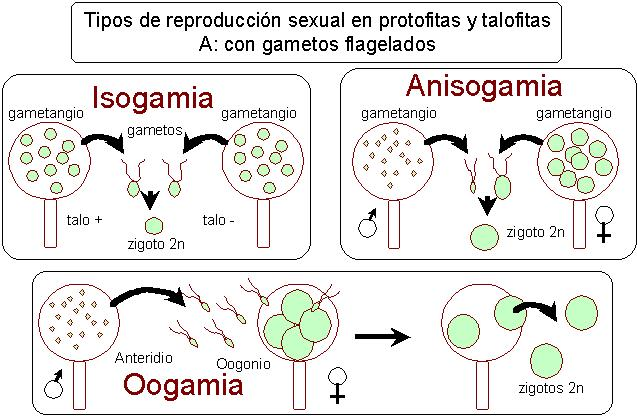
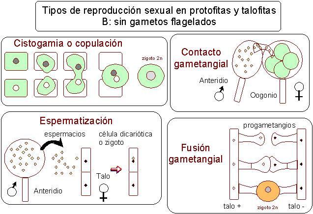

tema
4(3).-Principios
básicos de
Botánica: reproducción
3er.
guión para el tema 4 del
programa de Botánica
I (2º del Grado de
Biología)
C. Romero
Zarco, Departamento de Biología Vegetal y Ecología,
Universidad de Sevilla. 2002-2017. Guiones: [1] [2]
[3]
[4]
Tipos de reproducción sexual en protofitas y talofitas


4 de octubre de 2002 / 25 de
enero
de 2017
Referencias